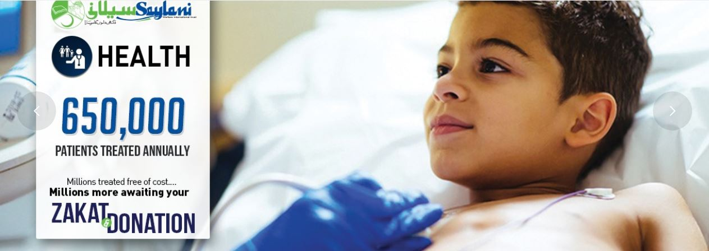

INTRODUCTION
Established in May 1999 by famous spiritual and religious scholar Maulana Bashir Ahmed Farooqui, Saylani Welfare International Trust was built on the fundamentals of breaking the cycle of poverty, alleviating the financial troubles of the poor, giving
people a chance to live a dignified life and spreading happiness.
We are an organization that believes in lighting up the lives of underprivileged people across the world. We endeavor to provide the best quality services in areas including food, education, medical and social welfare free of cost to people living
in the dark. With over 60 different sectors, we feed thousands of hungry people each day, hundreds more are given the hope of life through medical health care, many are educated to become leaders of tomorrow and several are given the opportunity
to stand on their feet financially.
Today, we are proud to say that our physical presence extends throughout Pakistan with a vast network of 125 branches operating in major cities including Karachi, Lahore, Islamabad, Rawalpindi, Hyderabad and Faisalabad. Apart from Pakistan, we have
overseas offices in the UK, USA and UAE as well. Our worldwide branches are operating under the guidance of a team of over 2,000 working professionals who help almost 125,000 people on a daily basis.
We strongly believe that a little help goes a long way and our work would not be possible without the generous support of our valuable donors. Our local and international donors have graciously lent us a hand by supporting our causes and enabling
us to serve the needs of people in need.


125,000
7,500
43,749
180,000
DAILY DASTARKHWAN (MONTHLY)
FAMILY ADOPTATION (MONTHLY)
MEDICAL (MONTHLY)
EDUCATION (MONTHLY)
WHAT WE ARE DOING
ONLINE SADQAH
WELFARE
MEDICAL
DASTARKHWAN
RO PLANT
EDUCATION
MISSION AND UPCOMING PROJECTS

HEPATITIS

HOUSING SOCIETY

IT LITERACY

THARPARKAR
Upcoming Events
IMAGE GALLERY
Useful Links
Connect With Us